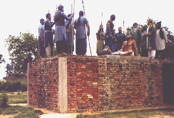

Sikhism


Bhai Taru Singh lived with his mother and younger sister at village Pahoola and did farming for his living. His father had died while he was still young. It had become a part of his life to speak with love, serve everyone who came to him and help those in need.
One day, Rahim Bakhsh, a Muslim fisherman stayed at his house to spend the night. Before going to bed, he talked to Bhai Taru Singh, "The Commander of Patti had forcibly taken away my daughter, when I complained to the Governor about him, he got me thrown out of the court. Nobody listens to the complaints of the poor in this regime." Bhai Taru Singh said to him, 'Your complaint has not been listened by the Governor but it has been heard in the house of Guru Nanak. Your daughter will reach you in a few days."
After some days a squad of Singhs passing that way, met Bhai Taru Singh. Bhai Taru Singh told them about the trouble of Rahim Bakhsh. That squad raided Patti and returned his daughter to him. The Commander of Patti was killed in that raid. Khushala, the headman of village Pahoola, informed Zakria Khan, the Governor, the secret behind this happening. The Governor sent soldiers to arrest Bhai Taru Singh. Bhai Taru Singh said to the soldiers who had come to arrest him, "You have come to take me away on the orders of your master. I, bound by the orders of my Master, cannot let you go without meals." The soldiers acceded to his request and after taking meals, arrested him and presented him before the Governor.
Hoping that Bhai Taru Singh will help in arresting other Singhs if he embraces Islam, the Governor said to him, "All your sins can be pardoned if you become a Muslim and cut and give me those long hair of yours so that I may make a string of them for weaving my bed." Bhai Taru Singh said, "I shall keep my faith with these hair and you shall be controlled by my shoes and with these you will die." The Governor was beside himself with rage on hearing this. He got Bhai Taru Singh mounted on rotating wheels of torture and then from a cobbler got his scalp removed so that hair may not grow again. After that he got him thrown in a ditch. In the evening the Governor could not pass urine. When the efforts of the physicians failed, the Governor sent Bhai Subeg Singh to seek pardon from Bhai Taru Singh. He sent him to the leader of Dal Khalsa. The leader said, "The Governor can pass urine if he is hit on the head with the shoe of Bhai Taru Singh but he will die before Bhai Taru Singh. Samadh of Bhai Taru Singh ji The words of the Singh must be fulfilled. When the Governor took the shoe of Bhai Taru Singh and hit his head with it, he was able to urinate. After surviving for 22 days with the help of that shoe, the Governor died on the 1st July, 1745 A.D. Bhai Taru Singh gave up this mortal body after hearing about the death of the Governor. A Gurdwara in Ludhiana district has been established to depict the suffering of such great Khalsa martyrs as Bhai Taru Singh through pictures. This picture represents life size sculptures of various characters involved depicting the glorious deeds of Bhai Taru Singh. 